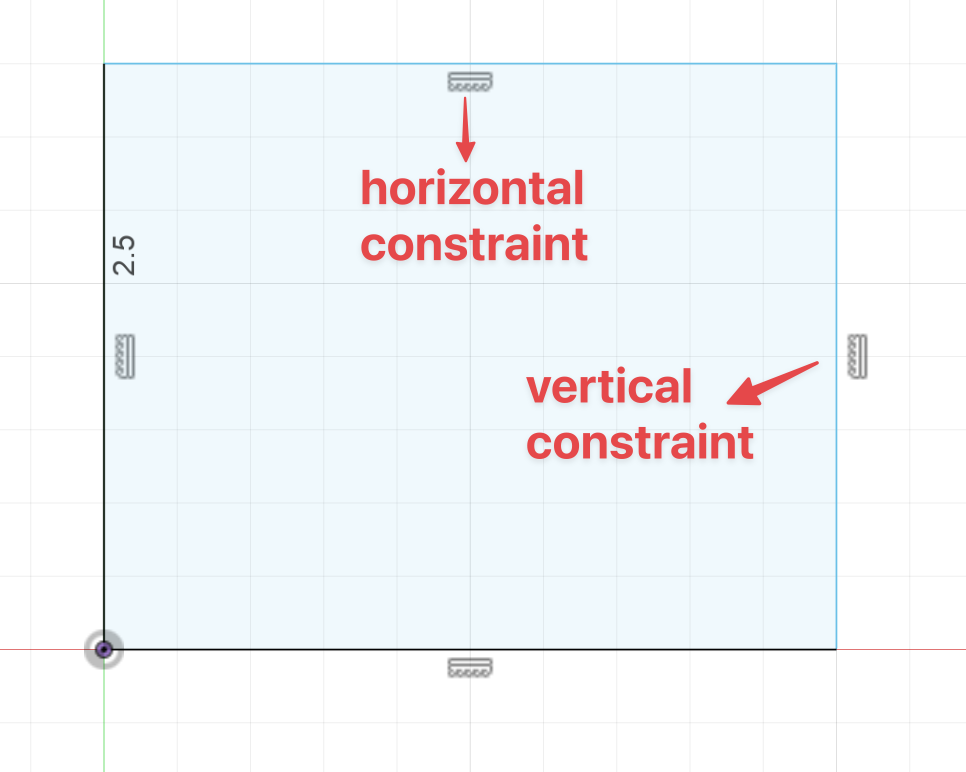

Requirements for Effective Learning Environments
I've been compiling notes on what makes a good environment to learn a new skill (not specific to any partcular skill), and I want to share some of the insights I've gathered.
In context assistance¶
This would be like when you use something like the chat feature in the Cursor IDE for example to ask questions about a particular documentation for example. The assistance with the task shows up in the context of the task instead of you having to switch environments to solve the question or problem.

This could also be something like explanatory visuals that show up in interfaces like CAD software explaining different aspects of the 3D model (like in the edges of an object you have constraints symbols).
.
Despite these 2 examples being a bit different, one involves agency on the part of the user (editor chat example) and the other doesn't, they illustrate the idea that interfaces can integrate strategic assistance directly embedded in the scenario where the skill is developed (in these cases would be programming and 3D modelling).
Automation of repeatable boilerplate tasks¶
Learning any skill involves overcoming a lot, and I mean A LOT of different frictions, or 'friction moments', meaning, scenarios where you feel discouraged from engaging actively with the skill due to the perceived difficulty of the task and probably a bunch of other factors. My very non-scientific model for how this works is essentially this:
-
Our brain decides to act based on the projected payoff of the task
-
This payoff is a function of the expected reward of the task and the projected efficiency on the task ('Expected Value of Control Theory').
-
When we start a new skill, the projected efficiency is often low, therefore we feel much less motivated even if the expected reward is high
Essentially, according to this Expected Value of Control Theory, engagement is a cost-benefit decision, therefore maybe (big maybe) we can try to diminish the cost of the things we can control beforehand.
The point I'm trying to make here is that we need good mental strategies to somehow boost expected reward and to maximize projected efficiency. Setting up environments that minimize boilerplate work seems like a low-hanging fruit when thinking about effective learning environments.
This can mean various things depending on what you're learning, one interesting study case is this repository I found where they setup a bunch of Claude Code workflows and package it as this 'learn fast kit' which automates a bunch of stuff involved in the process of learning different programming-related skills.
- https://github.com/cheukyin175/learn-faster-kit
This is a tricky step because automating too much can sometimes remove the actual 'reps' needed to effectiely learn, so caution is needed here, the overall idea is something like “scaffold + fade”: automate the non-core steps, but ensure the learner still practices the target primitives, and gradually reduce assistance as competence rises.
Difficulty/complexity organized in degrees of control based on learners experience¶
The 85% Rule¶
- Research suggests people learn most optimally when they're getting things right approximately 85% of the time
- Difficulty should be a function of: learner's experience + environmental parameters → 85% success rate
- Too easy (100% success) = no reward, no growth
- Too hard (low success rate) = demotivation, overwhelm
- Sweet spot: Enough challenge to engage problem-solving while maintaining measurable progress
Key insights:¶
- Complexity/difficulty isn't absolute—it's relative to learner experience
- The environment should dynamically adjust to maintain optimal challenge level
- Learners need to subjectively feel progress while actively solving problems
- Personal anecdote: When practicing piano, random exploration gave no reward, very hard tasks were demotivating, but tasks where I was "getting it wrong while getting it right" felt engaging and motivating
Direct control of relevant behaviours to the subject at hand¶
This one is about having direct control over the relevant behaviors that make up the subject you're learning. Think coding a web app, making changes to an editor and seeing those changes take place in a browser, or a threejs app where you can make changes to the code and see the results immediately.

Learning environments must allow learners to control the causal levers of the domain
- It's not about exposure to representations—it's about controlling and acting on the same primitives that produce outcomes in the real domain
I think as a learner you should be able to observe the consequences of their actions with minimal mediation. If a learner can succeed without ever performing the action that causally generates outcomes in the domain, the environment is teaching ABOUT the subject, not enabling learning OF the subject.
A few useful guidelines I found for this topic:
- The more steps between learner action and domain behavior, the weaker the learning environment
Think of a writing equations on paper to learn about physics (weak), versus working in a simulation where a learner can apply forces, change masses, adjust friction and see the result of changes in made to different formulas. Here, equations become descriptions of behavior, not the behavior itself.
This enables things like isolation of variables, experimentation, more importantly it enables seeing behavior (not just symbols).
- Immediate feedback only matters if the feedback reflects YOUR actions
When learning a new language for example, consider the difference between the quality of the feedback you get by just quizzing yourself on apps like Duolingo, versus the feedback you get from attempting to produce full sentences in constrained conversation environments (you can simulate something like this with a Custom GPT for example).
Not to say that quizzes with multiple choices aren't good but as far as fichness of feedback goes, you get much more from the later because you can control which words to choose, syntax to use, pragmatic intent, reinforcing authorship and goal-oriented interaction.
- Authorship only exists if you can do things that matter
Vibe coding with AI is a perfect example of a weak type of authorship (if the goal is to learn how to program) because authorship only truly exists (in my view) if you can do things that matter, asking for something without having a mental model of what it should look like or how you intend to get there, is a much weaker type of authorship then actually performing meaningful actions that matter for the final outcome.
That's not to say there is no place for AI in learning programming, because you might use it in a bunch of different ways to actually accomplish what you're going for without having AI deplete your authorship by providing you with the entire code directly.
- Constraint interactivity only works if constraints are placed on real primitives
A trendy topic these days is to create little apps to help people learn different concepts and ideas, the message here being that by changing some values, or moving sliders around and seeing the resulting behavior in a graph or something like that you might learn faster about the parameters involved.
THe only caveat I have with this is that it is not a silver bullet, if you have no idea about what is going on, creating a little interactive app will just add to the confusion, there needs to be a bit of ground work first so that when you're interacting with that environment, the changes made and the behavior observed actually conect to what you already know allowing you to encode actual knowledge rather than observable heuristics.
However I still haven't really discovered the perfect threshold for when these little interactive environments can be unambiguously useful, I think it has something to do with asking small targeted questions rather than general things like 'build me an interacive environment to understand confidence intervals and p-values'.
Automation for Learning?¶
This topic has been on my mind for quite a while now. I guess ever since I watched the movie 'The Matrix' and there is that scene where Neo (character played by Keanu Reeves) 'learns' a new skill by downloading it into his brain ('I know kung fu...' great you learned a useless martial art...lol). After a bit of discussion with ChatGPT I came to the conclusion that:
Automation is only useful when it removes irrelevant actions, not relevant ones
The goal is to remove the stuff that is unrelated with the actual learning of the skill, which means, never touch or replacing crucial steps that need to be taken by the user learner (think like asking ChatGPT for some code, then skimming it...you haven't really learned anything).
The idea with a functionally useful way to using automation for learning is to reduce steps between learner action and the domain behavior, you automate around the periphery, not the core skill.
Creation and composition of primitives¶
A primitive is the smallest meaningful manipulable unit of action in a domain, for example in programming it would be things like: variables, data types, for loops, etc.. In math it would be operations, transformations, constraints and so on. In language it would be words, syntax rules, grammatical structures and so on. Primitives have hierarchical levels, some are embodied (finger placement), others are conceptual/theoretical (rhythmic patterns, harmony rules).
Four Elements of a Good Primitive¶
- Atomic enough to practice directly
- Semantically loaded: Does something real in the domain
- Composable: Can combine with other primitives to form complex structures
- Observable: Effects are visible and provide feedback
Everything is Language¶
It seems to me right now that every skill involves learning a "language", meaning a system of primitives that can be composed. Therefore, skill development seems more like the process of acquiring vocabulary and expressivity through direct deliberate practice and engagement with the skill domain. You start with small nodes (primitives) and grow to "speak" more complex, interesting "sentences".
Developing skill means acquiring the ability to express yourself in increasingly complex compositions
Effective learning environments should: - Make primitives explicit (though this varies by environment complexity) - Allow learners to manipulate primitives directly - Support composition into higher-order structures - Provide immediate feedback on primitive-level actions (e.g., REPL environments, Jupyter notebooks) - Shift learning from recognition to control
Mastery is not about knowing what the pieces are, It's knowing what happens when you move them. In a sense, mastery is the ability to predict behavior, you must know what happens when conditions change, when primitives interact and so on.
Never automate the primitive the Learner is trying to internalize
Instead: - Automate AROUND the primitive - Scaffold TOWARDS it - Fade assistance as control improves
This preserves the "reps" required for skill acquisition while lowering unnecessary friction.
The learning environment should generate, manipulate, and compose primitives—but never replace the learner's practice of the core primitives themselves.
How AI Can Contribute (Without Replacing Learning)¶
AI is most valuable below the level of final answers, operating at the primitive layer:
- Surface hidden primitives in expert workflows
- Decompose tasks into learnable atomic actions
- Generate domain-appropriate starter primitives for beginners
- Suggest valid compositions of primitives
- Run "what if" variations on a primitive (modify parameters, expose edge cases)
- Detect compatible or redundant combinations
- Offer alternative compositions
AI doesn't replace composition—it expands the learner's search space
Example: Instead of AI writing a for-loop, it can propose: - Defining the input - Transforming the data - Validating the output
Each becomes a concrete practice unit (though this is more tutoring than primitive generation)
From primitive control → system design. Once learners can generate, manipulate, and compose primitives, autonomy becomes possible. This leads naturally into constrained self-directedness and authorship.
Epistemic Operations: AI's True Contribution to Learning¶
AI's contribution to learning is NOT at the primitive level—it's at the epistemic operations level.
Epistemic Operations vs. Domain Primitives
Epistemic Operations = Operations that act on representations to change how a learner can access, traverse, and orient themselves within knowledge
Working Definition: "An epistemic operation is a reversible transformation on a representation that changes the learner's access to meaning without changing the underlying content"
Why These Are NOT Primitives¶
- Domain primitives are INSIDE the skill—actions the learner must internalize and perform themselves
- Epistemic operations go AROUND the skill—they reshape the learning surface, not the target behavior
- Primitives must be practiced; epistemic operations facilitate practice
Examples of Epistemic Operations¶
1. Semantic Zooming (Summaries/Outlines) - The primitive is NOT the summary itself - The new capability: Continuous zoom over semantic density - Learner can: - Move between overview and detail - Reorient without losing global structure - Control granularity dynamically - This is an epistemic navigation primitive, not a domain primitive - It lowers entry costs without collapsing the learning task
2. Modal Translation (Text → Diagrams) - Example: Converting raw unstructured notes into Mermaid diagrams, then manipulating in Excalidraw - The value is NOT the diagram—it's the modal translation of meaning - Going from text → spatial structure: - Makes relations explicit and visually checkable - Externalizes structure - Reduces working memory load - The learner still has to understand relationships—AI just changes the medium where understanding happens
3. Representation Lifting - Example: Describing chord progressions in text → AI generates piano sheet music - The primitive: Converting low-level symbolic description → high-level executable notation - Result: Learner is oriented faster, able to act sooner, grounded in concrete artifact - Nothing about music theory is learned FOR the learner—but navigation is accelerated
The Unifying Framework¶
AI introduces a new layer of controllable transformations over representations—NOT over skills
These transformations: - Don't automate the skill - Don't remove learning steps - Do reduce orientation cost - Do expand navigability of complex material
However, there are some caveats:
- AI usage incentivizes meta-cognitive laziness (at least in my experience)
- Anchoring effect (when AI suggest something you're more likely to go with it then to think for yourself)
Three-Layer Model for Learning Environments¶
- Domain Primitives (bottom layer)
- The atomic units learners must internalize
-
Variables, scales, strokes, words, etc.
-
Epistemic Operations (middle layer)
- How learners enter, traverse, and structure the space
- Semantic zoom, modal translation, representation lifting
-
This is where AI adds the most value
-
Agency and Authorship (top layer)
- What learners do once they're oriented in the space
- Goal-setting, composition, creation
AI for learning is more powerful as a controllable transformer of representations
"AI's most pedagogically interesting contribution is not automating thinking but giving learners new ways to move through meaning"
This positions AI as: - Expanding the learner's epistemic toolkit - Providing new ways to navigate complexity - Reshaping the surface on which learning happens - But never replacing the practice of core skills
That's all I have on this topic for now! B)